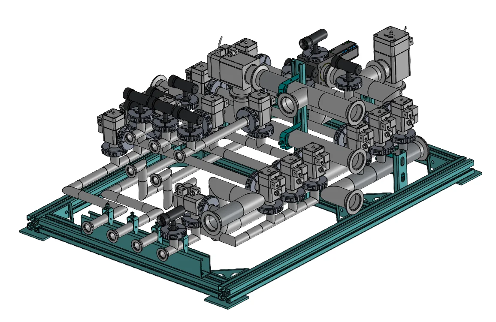
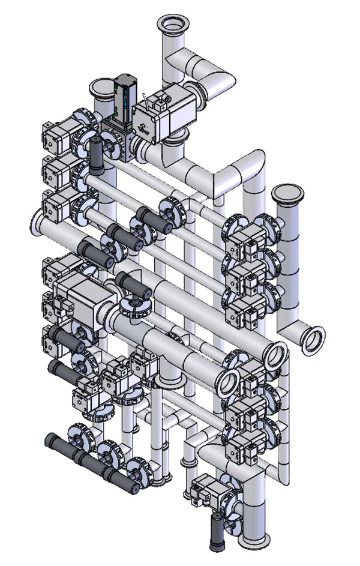
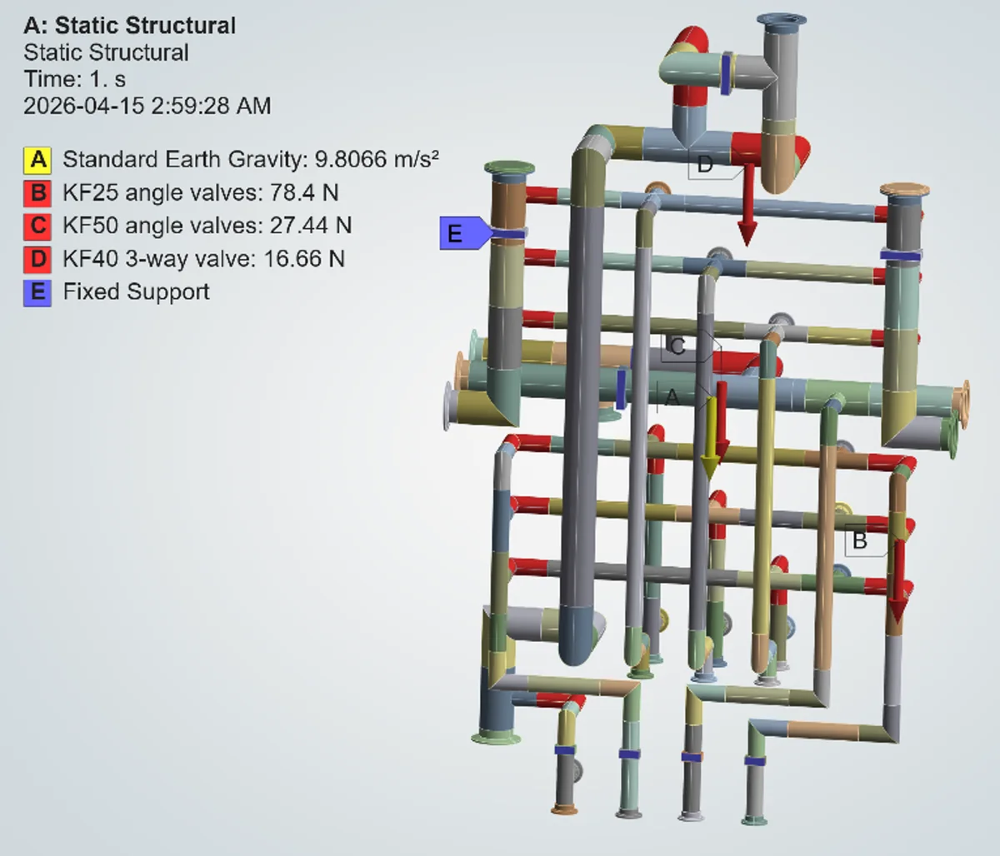
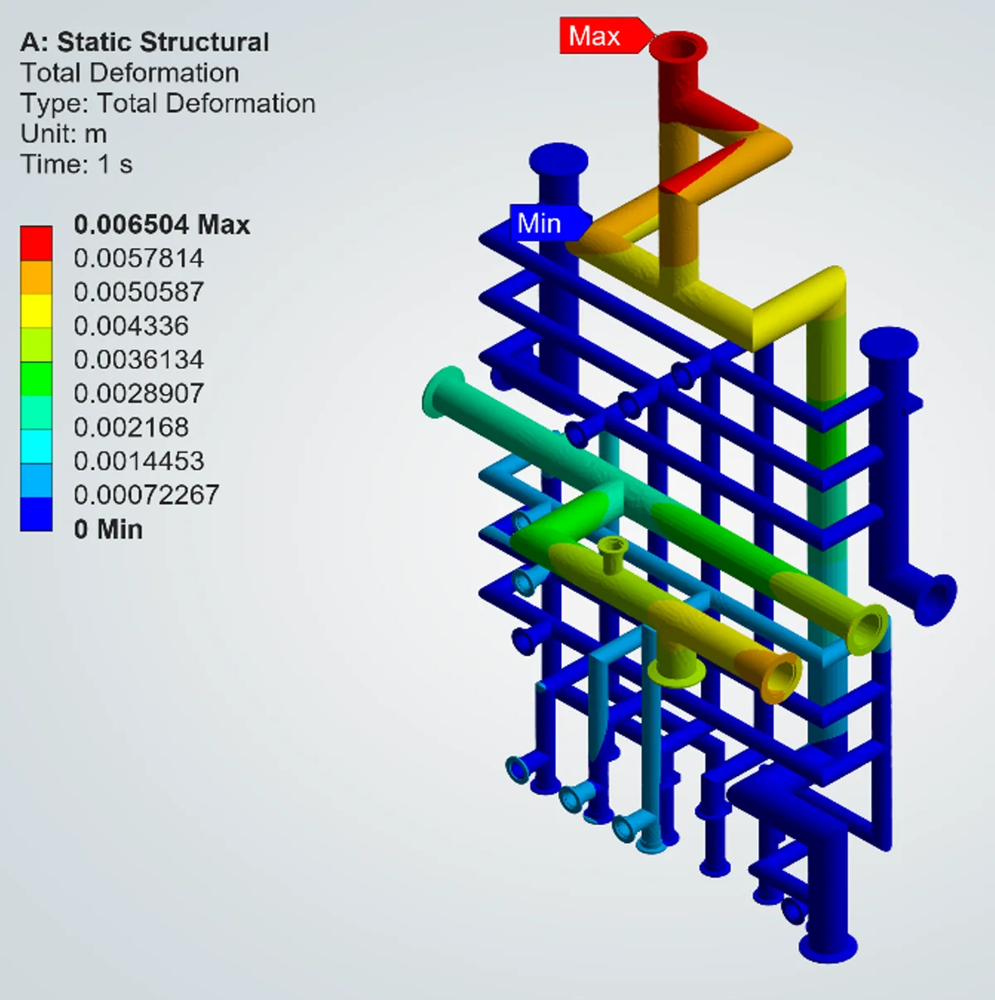
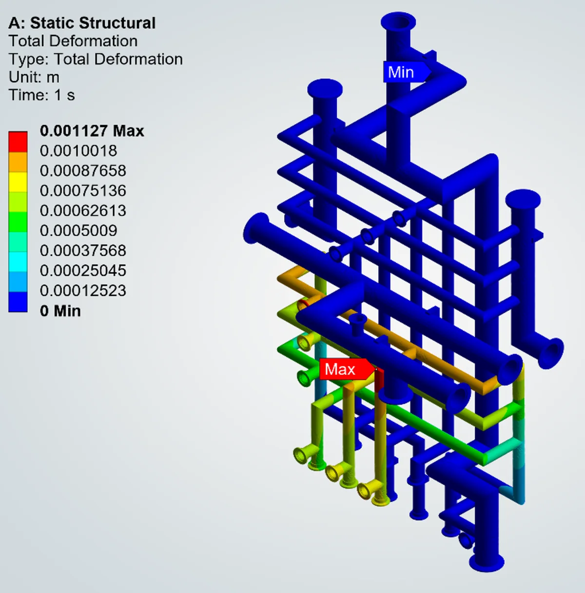
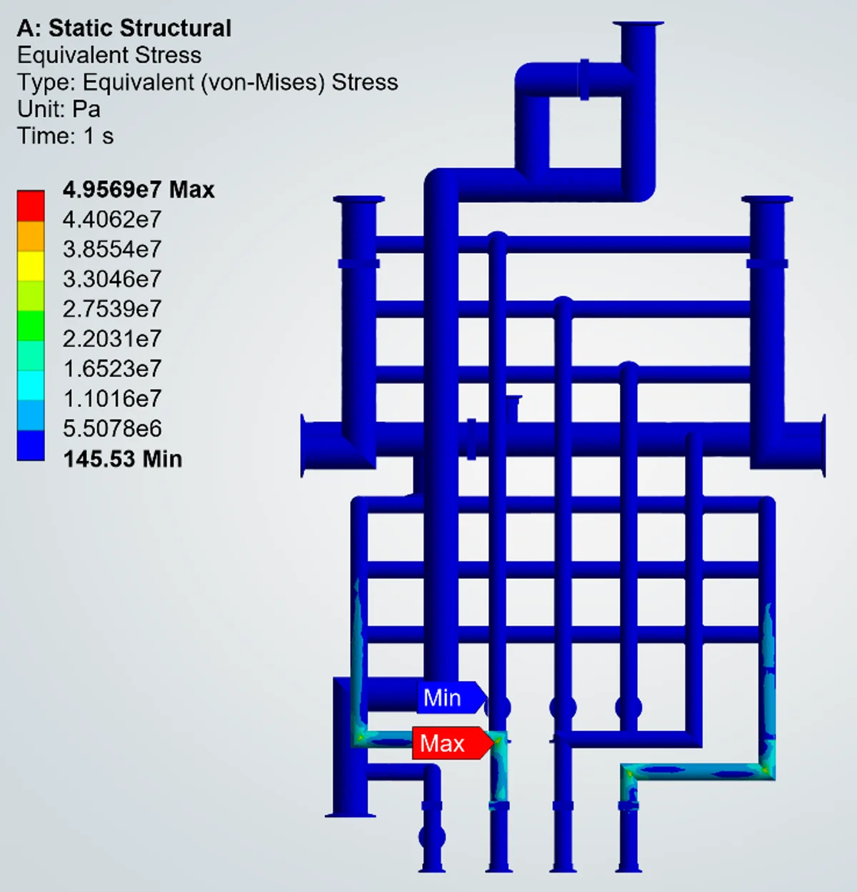

Pumping Manifold Support Structure
I designed the wall-mounted aluminum frame that holds a radioactive-gas pumping manifold at TRIUMF, Canada’s national particle accelerator laboratory. By using FEA to decide where the clamps go, I cut the manifold’s peak deflection by 83% and its peak stress by 54%, with 25% fewer parts than my first design.

Final design: manifold clamped into its support frame
6.5 → 1.13 mm
Peak manifold deflection, −83%
107 → 49.6 MPa
Peak stress in the manifold tubing, −54%
−25% parts
From first to final design, for less time installing in a radiation area
The problem
ARIEL is TRIUMF’s new rare-isotope facility. Its pumping manifold collects radioactive exhaust gas and routes it into decay storage tanks: sealed tanks that hold the gas until its short-lived radioactivity has died away. The manifold is a dense network of tubing and vacuum valves, and it needs a structure that holds it on a concrete wall without sagging or overstressing the tube joints.
Constraints
- Stiff and strongLimit sag and stress in the tubing under its own weight and the valve weights. I set the limits from published material properties and spec documents.
- Radiation areaIt is installed in the ARIEL target hall. A technician’s radiation dose grows with every minute spent there, so fewer parts and fasteners mean a faster, lower-dose install. (This is what “design for radiation” means here.)
- Wall-mountedThe frame anchors to a concrete wall.
- Easy to buildStandard stock, simple bolted assembly, minimal part count.

The manifold the frame has to hold
My role
What I did
- Built the simplified FEA model, loads and boundary conditions in ANSYS.
- Ran the baseline and iterated clamp placement until the targets were met.
- Designed the support frame in SolidWorks and sized its members.
- Produced the GD&T manufacturing drawings.
Who I worked with
- A senior engineer designed the manifold itself and reviewed my work.
- Engineers experienced with ANSYS helped me check the FEA model and results.
- Technicians fabricated and installed the manifold and frame; I worked alongside them.
Approach: let the analysis place the clamps
-
Build a model that runs fast
Simplified the manifold CAD to plain solid tube bodies. Applied gravity to the tubing, and the combined weight of each valve type as a force: 78.4 N for all the KF25 angle valves, 27.44 N for all the KF50 angle valves and 16.66 N for the KF40 3-way valve (KF sizes are standard vacuum fittings).
-
Model every clamp as a fixed support
Each clamp location is held rigidly in the model. That assumes the frame is much stiffer than the tubing, which then becomes a requirement on the frame design.
-
Run a baseline with the fewest clamps
Supports on the two upper side pipes and the four bottom legs only. The result shows where the manifold wants to move: 6.5 mm at the top riser and 107 MPa at a tube junction on the main header.
-
Chase the peak, one clamp at a time
Each iteration went after the current max-stress point: place a clamp to relieve it, re-run, repeat. The final layout adds clamps on the top riser and the central header. Every clamp stiffens the manifold but is one more part to install in a radiation area, so the aim was the fewest clamps that met the targets, not the stiffest possible layout.
-
Build the frame around the clamps, then check it
An anodized 6063 aluminum frame, with steel Unistrut posts (standard slotted channel that bolts together with off-the-shelf fittings) placed exactly at the final clamp positions. I then ran FEA on the frame itself and sized it so the clamp points barely move, which is the rigid-support assumption the manifold model relies on.
Results: baseline vs. optimized FEA
Both runs use the same model and the same loads. Only the clamp locations change.
| Result | Baseline | Optimized |
|---|---|---|
| Peak deflection | 6.50 mm | 1.13 mm −83% |
| Where | Top riser | Lower-left branch |
| Peak von Mises stress | 107 MPa | 49.6 MPa −54% |
| Where | Tube junction on the main header | Bend in the lower-left branch |
| Clamps | Upper side pipes, four bottom legs | Same, plus top riser and central header |
 (opens full-size image)
(opens full-size image)
Loads and clamps, before
Arrows A–D are gravity and the valve weights. Blue bands (E) are the clamps: upper side pipes and the four bottom legs only.


(opens full-size image)Loads and clamps, after: two clamps added
Same loads. New clamps on the top riser, where the baseline moved most, and on the central header.


(opens full-size image)Deflection before: 6.5 mm peak at the top riser
The top riser carries the KF40 3-way valve and had no clamp near it, so it moved the most.


(opens full-size image)Deflection after: 1.13 mm peak, moved to the lower-left branch
With the riser clamped, the top barely moves. The largest remaining movement is 83% smaller.
 (opens full-size image)
(opens full-size image)
Stress before: 107 MPa peak at a junction on the main header
Most of the manifold is lightly stressed. The peak is local, where a vertical tube meets the header.


(opens full-size image)Stress after: 49.6 MPa peak at a lower-left bend
Peak stress is less than half the baseline, and the peak sits in a small region near the bottom legs instead of on the main header.
The frame

Support frame: strut posts placed at the FEA clamp locations
- Anodized 6063 aluminum frame with gusseted joints, plus steel Unistrut posts for the clamps, all bolted together from stock parts.
- Upright posts put each pipe clamp where the FEA called for it; a row of four clamps holds the bottom legs.
- 25% fewer parts in the final design than in my first design.
- Released as GD&T manufacturing drawings with fewer fasteners and fewer distinct parts to order.
Assumptions and checks
- Rigid clamps. The manifold model treats every clamp as fixed. The frame FEA showed minimal deflection at the clamp points, which supports that, but real clamps still flex a little, so real deflection will be somewhat higher than the model shows.
- One load case. The analysis covers static gravity plus the valve weights. No other load cases, such as seismic or thermal, were analysed.
- Validation. I checked the results against a hand calculation, and reviewed the model and results with engineers experienced in ANSYS.